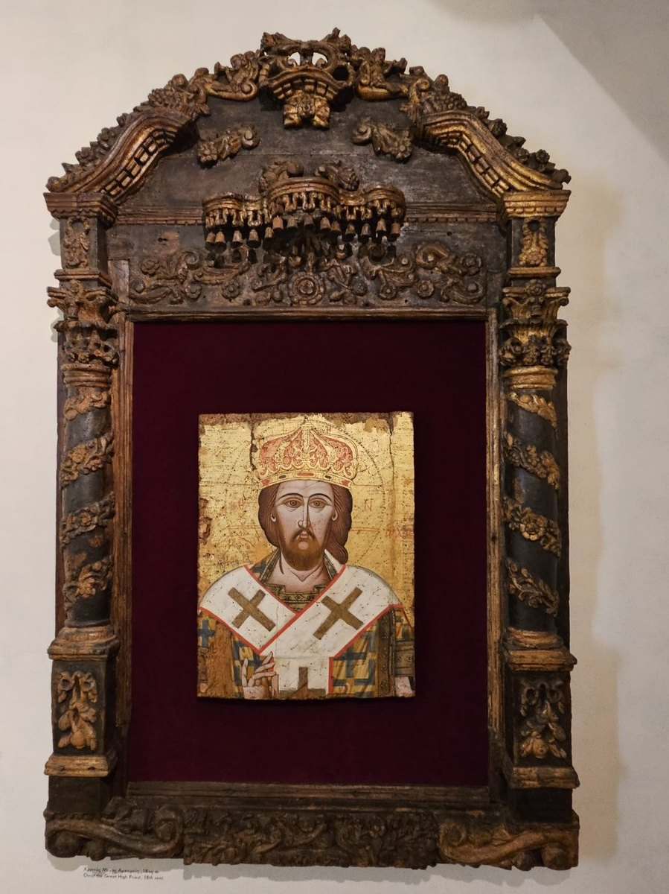

Hebrews 2 — The Mister Translation

⚠ An eighteenth-century Greek icon of Christ as the Great High Priest, crowned and robed as a bishop: the ‘crowned with glory and honor’ of verse 9 and the ‘merciful and faithful high priest’ of verse 17.

Translator’s Notes
“We must pay much closer attention to what we have heard, so that we do not drift away.” “For this reason” reaches back to chapter 1: a Son higher than the angels, and angels sent to serve “those who are to inherit salvation” (Hebrews 1:14). Pararreō, “to flow past, to slip away,” stands in one verse of the New Testament (dictionary). The picture is of something carried off by a current, not of a decision to leave, and the letter’s first warning is about that kind of loss. The KJV reads “lest at any time we should let them slip”; the ASV reads “lest haply we drift away from them”; the NWT 1984 reads “that we may never drift away.”
“If the word spoken through angels proved firm, and every transgression and disobedience received a just recompense.” “The word spoken through angels” is the Law given at Sinai: Stephen’s “you who received the law as ordinances of angels” at Acts 7:53, and Paul’s “ordained through angels” at Galatians 3:19. “Firm” is bebaios, and “confirmed” in verse 3 is its verb, bebaioō: the old word proved firm, and the new one was confirmed. Parakoē, “disobedience,” a failure to listen, stands in three verses: “the disobedience of the one man” at Romans 5:19, 2 Corinthians 10:6, and here (dictionary). “Transgression” is parabasis (dictionary). Misthapodosia, “recompense,” stands in three verses, all in Hebrews: here, of punishment; at 10:35; and at Hebrews 11:26, where Moses “was looking ahead to the reward” (dictionary). It is a payment of wages, and the wages can be either. The KJV reads “received a just recompence of reward”; the NWT 1984 reads “received a retribution in harmony with justice”; the NIV reads “received its just punishment.”
“How shall we escape if we neglect so great a salvation? It was spoken first through the Lord.” “Escape” is the verb of Romans 2:3, “that you will escape the judgment of God.” Ameleō, “to neglect, to pay no attention,” stands in four verses: the guests who “paid no attention” to the wedding invitation at Matthew 22:5, “Do not neglect the gift” at 1 Timothy 4:14, here, and Hebrews 8:9 (dictionary). “The Lord” here is Jesus, whose hearers passed the message on, and this translation prints “Lord.” “Confirmed to us by those who heard” puts the writer among those who received the message from the first hearers; it is one of the lines often cited against Paul’s authorship of the letter, since Paul says of his gospel, “I did not receive it from a man” (Galatians 1:12). The KJV reads “How shall we escape, if we neglect so great salvation”; the ASV reads “which having at the first been spoken through the Lord, was confirmed unto us by them that heard”; the NIV reads “This salvation, which was first announced by the Lord.”
“While God bore witness with them by signs and wonders and various acts of power, and by distributions of the Holy Spirit according to his will.” Synepimartyreō, “to bear witness along with,” stands in one verse (dictionary). “Signs and wonders and acts of power” are the three words of Acts 2:22, said of Jesus, and of 2 Corinthians 12:12, “the signs of an apostle” (dictionary; dictionary). Merismos, “distribution, division,” stands in two verses: here and Hebrews 4:12 (dictionary). “His will” is read as God’s, the subject of the sentence, or as the Spirit’s, as at 1 Corinthians 12:11, “distributing to each one individually just as he wills.” The KJV reads “and gifts of the Holy Ghost, according to his own will”; the Douay reads “and distributions of the Holy Ghost”; the NWT 1984 reads “with distributions of holy spirit according to his will,” with “holy spirit” lower-cased, in keeping with its teaching that the spirit is God’s active force.
“It was not to angels that he subjected the inhabited world to come.” “Inhabited world” is oikoumenē, the word of Hebrews 1:6, “when he brings the firstborn into the inhabited world” (dictionary). “About which we are speaking” names the subject of the letter so far: the world to come, and who will rule it. The KJV reads “For unto the angels hath he not put in subjection the world to come”; the NWT 1984 reads “the inhabited earth to come”; the TLB reads “will not be controlled by angels.”
“Someone has testified somewhere, saying, ‘What is a human being, that you remember him, or a son of man, that you look after him?’” The writer names neither David nor the psalm; in chapter 1 the speaker of Scripture was God, and here it is “someone” (dictionary). The quotation is Psalm 8:4–6 (8:5–7 in the Hebrew numbering), in the words of the Greek Psalter. In the Hebrew, “son of man” is the poetic partner of “human being,” ben-adam beside enosh, and the psalm is about humankind; verse 9 reads it of Jesus, and readers take the chapter to mean humankind, or Jesus, or humankind as it is completed in Jesus. “Look after” is episkeptomai, the verb of Matthew 25:36, “I was sick and you looked after me,” and of Luke 1:68, “he has visited.” The KJV reads “What is man, that thou art mindful of him?”; the NIV reads “What is mankind that you are mindful of them, a son of man that you care for him?”; the TLB reads “And who is this Son of Man you honor so highly?”
⚠ “You made him for a little while lower than the angels.” The Hebrew of the psalm says “lower than elohim” (dictionary), the word for God and for divine beings; the Greek Psalter has “angels” (both checked), and Hebrews quotes the Greek. Brachy ti can mean “a little” in degree or “for a little while” in time; the Hebrew me’at in the psalm is read as degree. This translation prints “for a little while” in verses 7 and 9, because verse 9 applies the line to Jesus, whose lowering ends in a crowning; readers who keep the degree have the psalm’s Hebrew behind them. Elattoō, “to make lower,” stands in three verses: John the Baptist’s “I must decrease” at John 3:30, and verses 7 and 9 here. “Crowned” is the verb of 2 Timothy 2:5, “he is not crowned unless he competes lawfully.” Westcott–Hort and Tregelles add the psalm’s next line, “and you set him over the works of your hands,” which stands in the Greek Psalter; Nestle–Aland 28 and Robinson–Pierpont do not (the apparatus). The ASV prints it: “And didst set him over the works of thy hands”; the NWT 1984 reads “and appointed him over the works of your hands”; the NIV reads “You made them a little lower than the angels.”
“You subjected all things under his feet. … But now we do not yet see all things subjected to him.” Paul quotes the same line of the psalm at 1 Corinthians 15:27, “he has put all things under his feet,” and at Ephesians 1:22. Anypotaktos, “not subject,” stands in four verses; at 1 Timothy 1:9, Titus 1:6 and 1:10 it is “unruly.” Westcott–Hort, Tregelles, Nestle–Aland 28 and Robinson–Pierpont read “in subjecting all things to him”; the printed text, Holmes’s, has no “to him” (the apparatus). “Not yet” is the hinge of the paragraph: the psalm says all things, and the writer admits that it is not so now. The KJV reads “But now we see not yet all things put under him”; the ASV reads “he left nothing that is not subject to him”; the Douay reads “he left nothing not subject to him.”
⚠ “Jesus … so that apart from God he might taste death for everyone.” This is the first time the letter names Jesus, and the sentence holds the name back to the end of its first clause. Then a reading that divides the editions: the Greek printed above, Michael Holmes’s SBL edition, reads chōris theou, “apart from God”; Westcott–Hort, Tregelles, Nestle–Aland 28 and Robinson–Pierpont read chariti theou, “by the grace of God” (the apparatus), and all seven English versions on the shelf follow that reading. “Apart from God” is reported to stand in a few manuscripts and in early Christian writers, Origen among them, and “by the grace of God” in the great majority of manuscripts (both reported here, not checked). This translation follows the printed text, as it does throughout. “Apart from God” is read two ways: Jesus died abandoned, as Psalm 22, quoted three verses later, begins, the cry of Mark 15:34, “My God, my God, why have you forsaken me?”; or he died for everything except God, the one exception Paul makes to the “all things” of the same psalm at 1 Corinthians 15:27, “this excludes the one who put all things under him.” “For everyone” can also be read as “for everything.” This page does not choose. “Taste death” is the phrase of Matthew 16:28 and John 8:52. “Apart from” is chōris, as at Hebrews 11:40, “made complete apart from us.” The KJV reads “that he by the grace of God should taste death for every man”; the NIV reads “so that by the grace of God he might taste death for everyone”; the Douay reads “through the grace of God, he might taste death for all.”
“It was fitting for him, for whom are all things and through whom are all things, in bringing many sons to glory.” “Him” is read as God, who brings the sons to glory; the pair “for whom … through whom” is close to Romans 11:36, “from him and through him and to him are all things,” while at 1 Corinthians 8:6 “through whom are all things” is said of Jesus Christ. “Sons” carries the “Son” of chapter 1 into the plural. The NIV reads “In bringing many sons and daughters to glory”; the KJV reads “in bringing many sons unto glory”; the Geneva reads “seeing that he brought many children unto glory.”
“To make the Author of their salvation complete through sufferings.” Archēgos, the one who goes first and opens the way, stands in four verses: “the Author of life” at Acts 3:15, “Author and Savior” at Acts 5:31, here, and Hebrews 12:2; this translation prints “Author” in all of them (dictionary). “Make complete” is teleioō, as at Hebrews 11:40, “so that they would not be made complete apart from us” (dictionary). It means bringing to the goal, and says nothing of a flaw being removed; English “perfect” can suggest that, which is why the note is here. The KJV reads “to make the captain of their salvation perfect through sufferings”; the NWT 1984 reads “the Chief Agent of their salvation”; the NIV reads “the pioneer of their salvation”; the Douay reads “to perfect the author of their salvation, by his passion.”
“The one who sanctifies and those who are sanctified are all from one; for this reason he is not ashamed to call them brothers.” “Sanctify” is hagiazō (dictionary). “From one” is read as from one Father, God; as from one ancestor, Adam or Abraham; or as from one humanity. The Greek has no noun, and this page does not supply one. Epaischynomai, “to be ashamed,” stands in nine verses, among them “whoever is ashamed of me” at Mark 8:38, and Hebrews 11:16, “God is not ashamed of them, or to be called their God” (dictionary). The KJV reads “are all of one: for which cause he is not ashamed to call them brethren”; the NIV reads “are of the same family”; the TLB reads “now have the same Father he has.”
“I will proclaim your name to my brothers; in the midst of the congregation I will sing hymns to you.” The quotation is Psalm 22:22 (22:23 in the Hebrew), where the Hebrew has “in the midst of the qahal”; the Greek Psalter has ekklēsia, and this translation prints “congregation” (dictionary). The Greek Psalter begins “I will recount,” diēgēsomai, where Hebrews has apangelō, “I will proclaim” (both checked). The psalm opens with “My God, my God, why have you forsaken me?”; the verse quoted here is where it turns to praise. Apangellō is the verb of the risen Jesus at Matthew 28:10, “report to my brothers,” and at John 20:17 he again calls the disciples “my brothers.” Hymneō, “to sing hymns,” stands in four verses: Matthew 26:30, Mark 14:26, Acts 16:25 and this one. The KJV reads “in the midst of the church will I sing praise unto thee”; the ASV reads “In the midst of the congregation will I sing thy praise”; the NWT 1984 reads “I will declare your name to my brothers.”
“I will put my trust in him.” … “Look — I and the children whom God has given me.” Both lines are from Isaiah 8:17–18 in the Greek. “I will put my trust in him” is the Greek of Isaiah 8:17, and the same words stand in the Greek of 2 Samuel 22:3 and Isaiah 12:2; the Hebrew of Isaiah 8:17 says “I will wait for Jehovah … and I will hope for him” (all checked). In Isaiah 8:18 the Hebrew says “the children whom Jehovah has given me,” and the Greek says “God” (both checked); Hebrews quotes the Greek, and this translation prints “God.” In Isaiah the children are the prophet’s sons, whose names were signs, as with Shear-jashub at Isaiah 7:3 (encyclopedia). “Look —” is idou, for the Hebrew hineh. The KJV reads “Behold I and the children which God hath given me”; the NIV reads “Here am I, and the children God has given me”; the NWT 1984 reads “whom Jehovah gave me,” restoring the Hebrew’s name where the Greek of Hebrews has theos.
“Since, then, the children share in blood and flesh, he himself likewise partook of the same things.” “The children” are those of Isaiah 8:18 in the verse before. “Blood and flesh” is the order of the printed text, as at Ephesians 6:12; Robinson–Pierpont has “flesh and blood” (the apparatus). “Share” is a perfect tense, the children’s standing condition; “partook” is an aorist, a single act. Paraplēsiōs, “likewise, in the same way,” stands in one verse. The KJV reads “Forasmuch then as the children are partakers of flesh and blood”; the NWT 1984 reads “are sharers of blood and flesh”; the TLB reads “he became flesh and blood too by being born in human form.”
“So that through death he might put out of action the one who holds the power of death, that is, the devil.” “Put out of action” is katargeō, to make inoperative rather than to destroy (dictionary), the verb of 1 Corinthians 15:26, “The last enemy to be abolished is death,” and of 2 Timothy 1:10, “who abolished death.” Here its object is the one who holds death’s power. “The devil” is diabolos, the slanderer (dictionary). The KJV reads “that through death he might destroy him that had the power of death”; the ASV reads “that through death he might bring to nought him that had the power of death”; the NWT 1984 reads “the one having the means to cause death”; the NIV reads “he might break the power of him who holds the power of death.”
“And release all those who through fear of death were subject to slavery all their lives.” Apallassō, “to release,” stands in three verses: Luke 12:58, “to be released from him”; Acts 19:12, of diseases released from the sick; and here (dictionary). Douleia, “slavery,” stands in five verses, among them Romans 8:15, “you did not receive a spirit of slavery, back into fear,” the same pairing of slavery and fear, and Galatians 5:1 (dictionary). The KJV reads “And deliver them who through fear of death were all their lifetime subject to bondage”; the NWT 1984 reads “emancipate all those who for fear of death were subject to slavery all through their lives”; the TLB reads “as slaves to constant dread.”
“For surely it is not angels that he takes hold of; he takes hold of the seed of Abraham.” Dēpou, “surely, of course,” stands in one verse. Epilambanomai, “to take hold of,” is the verb of 1 Timothy 6:12, “take hold of the eternal life,” and of Hebrews 8:9, “I took them by the hand” (dictionary). Readers take it as taking hold in order to help, or, with the older English versions, as taking on a nature. Mary’s song has a related verb, antilambanomai, beside Abraham and his seed: “He has taken hold of Israel his servant … to Abraham and to his seed forever” (Luke 1:54 and 1:55), and the Greek of Isaiah 41:8–9 has “seed of Abraham” and “whom I took hold of” (checked). “Seed” is sperma, as at Galatians 3:29, “you are Abraham’s seed.” The KJV reads “For verily he took not on him the nature of angels”; the ASV reads “For verily not to angels doth he give help”; the Douay reads “but of the seed of Abraham he taketh hold”; the TLB reads “he did not come as an angel but as a human being.”
“So he had to be made like his brothers in every respect, so that he might become a merciful and faithful high priest.” “Made like … in every respect” sits beside Philippians 2:7, “coming to be in the likeness of human beings,” and Romans 8:3, “in the likeness of sinful flesh.” Eleēmōn, “merciful,” stands in two verses: “Happy the merciful” at Matthew 5:7, and here (dictionary). This is the first time Hebrews calls Jesus “high priest”; the title returns at 3:1 and 4:14, and runs through the middle of the letter (dictionary). “In the things relating to God” is ta pros ton theon, the sphere in which a priest acts. The KJV reads “a merciful and faithful high priest in things pertaining to God”; the Douay reads “a merciful and faithful priest before God”; the NIV reads “fully human in every way.”
⚠ “To make atonement for the sins of the people.” Hilaskomai stands in two verses: the tax collector’s “God, be merciful to me, a sinner!” at Luke 18:13, and here, where its object is “the sins” (dictionary). It belongs to the family of hilastērion, “a place of atonement” at Romans 3:25 (dictionary), and the same readings stand on the shelf: turning away wrath (“propitiation”), removing the sins (“expiation”), or reconciling. This translation prints “make atonement for,” the rendering it gives the Hebrew kipper at Leviticus 16:6, and does not vote. The ASV reads “to make propitiation for the sins of the people”; the NWT 1984 reads “in order to offer propitiatory sacrifice for the sins of the people”; the KJV reads “to make reconciliation for the sins of the people”; the NIV reads “that he might make atonement for the sins of the people.”
“Since he himself has suffered when he was tested, he is able to help those who are being tested.” Peirazō means both “to test” and “to tempt”; this translation prints “tested,” as at Matthew 4:1, “to be tested by the devil,” with both senses in the dictionary (dictionary). At the supper Jesus says “you are the ones who have remained with me in my trials” (Luke 22:28), with the noun of the same root. “Help” is boētheō (dictionary); its noun returns at Hebrews 4:16, “grace for timely help.” “Helper” follows at 13:6. The KJV reads “he is able to succour them that are tempted”; the NWT 1984 reads “he is able to come to the aid of those who are being put to the test”; the NIV reads “he is able to help those who are being tempted.”
Patterns worth carrying forward
Where this translation keeps the exact words: “drift away” for pararreō; “firm” and “confirmed” for one root; “recompense,” a wage that can be reward or punishment; “the Lord,” of Jesus; “signs and wonders and acts of power,” as at Acts 2:22; “inhabited world,” as at 1:6; “a human being” and “a son of man”; “look after,” as at Matthew 25:36; “for a little while,” with the degree reading in the note; “apart from God,” the printed text, with “by the grace of God” in the note; “Author,” as at Acts 3:15; “make complete,” as at 11:40; “congregation” for ekklēsia; “God” at verse 13, the word of the Greek, with the Hebrew’s name in the note; “blood and flesh,” in that order; “put out of action” for katargeō; “seed,” as at Galatians 3:29; “make atonement,” as at Leviticus 16:6; and “tested,” as at Matthew 4:1.
Echoes paid. The heirs of salvation of Hebrews 1:14; the Law ordained through angels of Galatians 3:19 and Acts 7:53; the reward of Hebrews 11:26; signs and wonders from Acts 2:22; the Spirit distributing at 1 Corinthians 12:11; the inhabited world of Hebrews 1:6; all things under his feet from 1 Corinthians 15:27; taste death from Matthew 16:28; made complete apart from us from Hebrews 11:40; the Author of Acts 3:15; not ashamed from Hebrews 11:16; my brothers from Matthew 28:10; blood and flesh from Ephesians 6:12; death abolished at 1 Corinthians 15:26; slavery and fear from Romans 8:15; Abraham’s seed from Galatians 3:29; the hilas- family of Romans 3:25; and the testing of Matthew 4:1.
Echoes planted. “Neglect” and “take hold” at 8:9; “recompense” at 10:35; the “Author” at 12:2.
Next in this book: Hebrews 3, already on these pages. Jesus, “the apostle and high priest of our confession,” counted worthy of more glory than Moses: Moses faithful in God’s house as an attendant, Christ as a Son over it; then the Holy Spirit’s “Today, if you hear his voice,” and the wilderness generation.